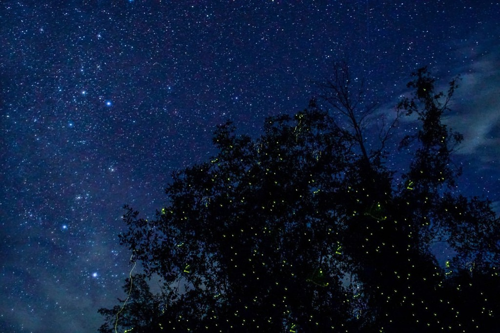

Johor Darul Takzim
Sultan Abu Bakar State Mosque
Danga Bay

Endau Rompin National Park
Lontong
Tasik Biru Kangkar Pulai
Johor is a state of Malaysia in the south of the Malay eninsula. Johor has land borders with the Malaysian states of Pahang to the north and Malacca and Negeri Sembilan to the northwest. Johor shares maritime borders with Singapore to the south and Indonesia to both the west and east. Johor Bahru is the capital city and the economic centre of the state, Kota Iskandar is the seat of the state government, and Muar serves as the royal town of the state.
Johor
This city is situated at the southern tip of the Malay Peninsula.
Famous place in Johor
| Gunung Ledang National Park | Muar Walking Tour |
| Kukup Fishing Village | Gunung Lambak |
| Tanjung Piai | Kota Tinggi Waterfalls |
| Johor East Coast Beaches | Rawa Island |
| Desaru Fruit Farm | Istana Bukit Serene |
Fireflies at Kota Tinggi
Known as the ‘Firefly Valley Leisure Park,’ this is where you get to see nature’s twinkles on land. You’ll be able to take a small boat with other passengers to coast along the sides of a mangrove swamp, where the fireflies shimmer and glimmer in the night. Best to visit on a new moon when the fireflies won’t be outshone by the moonlight.
Pulai Waterfall

The Pulai waterfall is located in Gunung Pulai Park near the town of Kulai. Over the weekends, there would be many locals flocking to it. This waterfall is very much commercialized with a road that leads to it. Fortunately, there are no charges to enter the waterfall. A trip to there is really a visit to a park rather then a trekking trip even though the park boasts a waterfall and a mountain.
Puteri Harbour
Puteri Harbour is known internationally as a popular dining, entertainment and holiday destination, surrounded by numerous highly desired luxury residences.
Legoland
Legoland (LEGOLAND) is a chain of family theme parks focusing on the construction toy system Lego. They are not fully owned by The Lego Group itself, they are owned and operated by the British theme park company Merlin Entertainments.